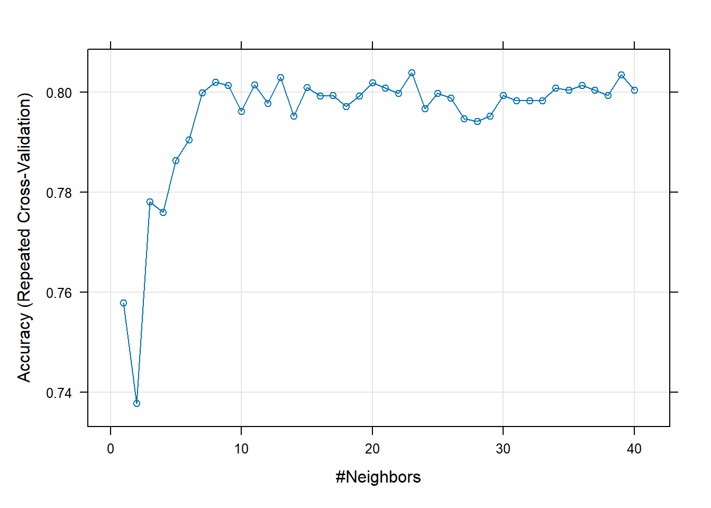
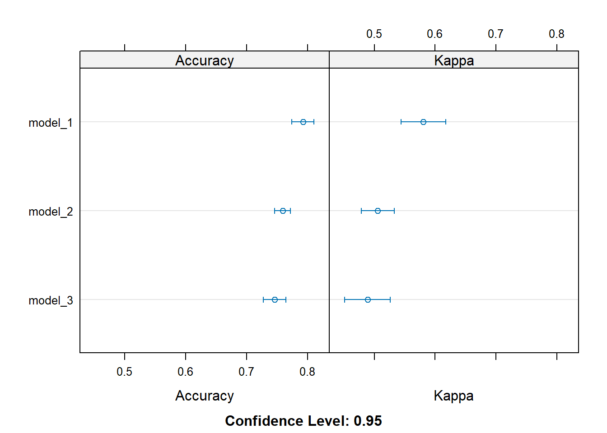

── Conflicts ────────────────────────────────────────── tidyverse_conflicts() ──
✖ dplyr::filter() masks stats::filter()
✖ dplyr::lag() masks stats::lag()
ℹ Use the conflicted package (<http://conflicted.r-lib.org/>) to force all conflicts to become errors
Loading required package: caret
Warning: package 'caret' was built under R version 4.3.3
Loading required package: lattice
Attaching package: 'caret'
The following object is masked from 'package:purrr':
lift
Loading required package: rpart
Loading required package: randomForest
Warning: package 'randomForest' was built under R version 4.3.3
randomForest 4.7-1.1
Type rfNews() to see new features/changes/bug fixes.
Attaching package: 'randomForest'
The following object is masked from 'package:dplyr':
combine
The following object is masked from 'package:ggplot2':
margin
Loading required package: gbm
Warning: package 'gbm' was built under R version 4.3.3
Loaded gbm 2.2.2
This version of gbm is no longer under development. Consider transitioning to gbm3, https://github.com/gbm-developers/gbm3
What is the purpose of using cross-validation when fitting a random forest model?
Cross Validation helps see how well a random forest model is working on different parts of the data. This prevents overfitting and provides a more accurate estimate.
Describe the bagged tree algorithm.
Bagging (Bootstrap Aggregating) trains several decision trees on bootstrapped data samples and combines their results by regression or classification to provide better results.
What is meant by a general linear model?
A GLM is a linear model that is extended to accomadate for response variables with different distributions and uses a link function to relate the predictors to the response variable.
When fitting a multiple linear regression model, what does adding an interaction term do? That is, what does it allow the model to do differently as compared to when it is not included in the model?
Adding an interaction term allows the model to capture a combined effect of two predictors on the response and displays their relationship changes between one predictor with different values of another.
Why do we split our data into a training and test set?
Splitting the data allows us to train the model on one subset and validate its performance on a new one. This ensures that it can make accurate predictions on the new data based on what it has learned from the training set.
Task 2: Fitting Models
For this Homework assignment we will be using the “hearts.csv” dataset which indicate whether or not someone has a heart disease by HeartDisease = 1 or = 0.
# Load datasetheart_dat <-read.csv("heart.csv")# Check for missing valuesmissing <-colSums(is.na(heart_dat))print(missing)
Age Sex ChestPainType RestingBP
Min. :28.00 Length:918 Length:918 Min. : 0.0
1st Qu.:47.00 Class :character Class :character 1st Qu.:120.0
Median :54.00 Mode :character Mode :character Median :130.0
Mean :53.51 Mean :132.4
3rd Qu.:60.00 3rd Qu.:140.0
Max. :77.00 Max. :200.0
Cholesterol FastingBS RestingECG MaxHR
Min. : 0.0 Min. :0.0000 Length:918 Min. : 60.0
1st Qu.:173.2 1st Qu.:0.0000 Class :character 1st Qu.:120.0
Median :223.0 Median :0.0000 Mode :character Median :138.0
Mean :198.8 Mean :0.2331 Mean :136.8
3rd Qu.:267.0 3rd Qu.:0.0000 3rd Qu.:156.0
Max. :603.0 Max. :1.0000 Max. :202.0
ExerciseAngina Oldpeak ST_Slope HeartDisease
Length:918 Min. :-2.6000 Length:918 Min. :0.0000
Class :character 1st Qu.: 0.0000 Class :character 1st Qu.:0.0000
Mode :character Median : 0.6000 Mode :character Median :1.0000
Mean : 0.8874 Mean :0.5534
3rd Qu.: 1.5000 3rd Qu.:1.0000
Max. : 6.2000 Max. :1.0000
# Convert HeartDisease to a factorheart_dat$HeartDisease <-as.factor(heart_dat$HeartDisease)# Remove ST_Slope columnheart_dat <- heart_dat %>%select(-ST_Slope)# Create dummy variables for categorical variablescategorical_vars <-c("Sex", "ExerciseAngina", "ChestPainType", "RestingECG")dummy_vars <-dummyVars(~ ., data = heart_dat[categorical_vars])dummy_data <-predict(dummy_vars, heart_dat[categorical_vars])# Combine dummy variables with the original datasetheart_dat <- heart_dat %>%select(-one_of(categorical_vars)) %>%bind_cols(as.data.frame(dummy_data))
KNN with Split Dataset
# Split the data into training and test setsset.seed(123)train_index <-createDataPartition(heart_dat$HeartDisease, p =0.7, list =FALSE)train_data <- heart_dat[train_index, ]test_data <- heart_dat[-train_index, ]# Set up 10-fold cross-validationtrain_control <-trainControl(method ="repeatedcv", number =10, repeats =3)# Set up the grid for ktune_grid <-expand.grid(k =1:40)# Train the kNN modelknn_model <-train( HeartDisease ~ ., data = train_data,method ="knn",trControl = train_control,preProcess =c("center", "scale"),tuneGrid = tune_grid)knn_model
k-Nearest Neighbors
643 samples
17 predictor
2 classes: '0', '1'
Pre-processing: centered (17), scaled (17)
Resampling: Cross-Validated (10 fold, repeated 3 times)
Summary of sample sizes: 579, 580, 578, 578, 579, 578, ...
Resampling results across tuning parameters:
k Accuracy Kappa
1 0.7578485 0.5115282
2 0.7377040 0.4733859
3 0.7780744 0.5527047
4 0.7759828 0.5489545
5 0.7863441 0.5704546
6 0.7904387 0.5779413
7 0.7998723 0.5964296
8 0.8019719 0.6002275
9 0.8013785 0.5991926
10 0.7962177 0.5882800
11 0.8014348 0.5988616
12 0.7977882 0.5914950
13 0.8029653 0.6021097
14 0.7952163 0.5875912
15 0.8009135 0.5992020
16 0.7992621 0.5955891
17 0.7993344 0.5962211
18 0.7971945 0.5911453
19 0.7992939 0.5957385
20 0.8019146 0.6006240
21 0.8008561 0.5987639
22 0.7998064 0.5966240
23 0.8039576 0.6045527
24 0.7967135 0.5896521
25 0.7998224 0.5957062
26 0.7988208 0.5933232
27 0.7946785 0.5844760
28 0.7941571 0.5837171
29 0.7952316 0.5854417
30 0.7993582 0.5942385
31 0.7982842 0.5915807
32 0.7982840 0.5912801
33 0.7982762 0.5910646
34 0.8008726 0.5965976
35 0.8003841 0.5947967
36 0.8014012 0.5969293
37 0.8004001 0.5947639
38 0.7993259 0.5925327
39 0.8035337 0.6007435
40 0.8003756 0.5940410
Accuracy was used to select the optimal model using the largest value.
The final value used for the model was k = 23.
# Plot the results of the kNN modelplot(knn_model)

# Predict on the test setpredictions_knn <-predict(knn_model, newdata = test_data)# Evaluate the kNN model using confusion matrixconf_matrix_knn <-confusionMatrix(predictions_knn, test_data$HeartDisease)print(conf_matrix_knn)
Confusion Matrix and Statistics
Reference
Prediction 0 1
0 109 27
1 14 125
Accuracy : 0.8509
95% CI : (0.8032, 0.8908)
No Information Rate : 0.5527
P-Value [Acc > NIR] : < 2e-16
Kappa : 0.7015
Mcnemar's Test P-Value : 0.06092
Sensitivity : 0.8862
Specificity : 0.8224
Pos Pred Value : 0.8015
Neg Pred Value : 0.8993
Prevalence : 0.4473
Detection Rate : 0.3964
Detection Prevalence : 0.4945
Balanced Accuracy : 0.8543
'Positive' Class : 0
Logistic Regression Models
# Model 1: Using all predictorsmodel_1 <-train( HeartDisease ~ ., data = train_data,method ="glm",family = binomial,trControl = train_control,preProcess =c("center", "scale"))# Model 2: Using a subset of predictorsmodel_2 <-train( HeartDisease ~ Age + Cholesterol + MaxHR + SexM + ChestPainTypeATA,data = train_data,method ="glm",family = binomial,trControl = train_control,preProcess =c("center", "scale"))# Model 3: Using a different subsetmodel_3 <-train( HeartDisease ~ Age + RestingBP + FastingBS + ExerciseAnginaY + RestingECGLVH,data = train_data,method ="glm",family = binomial,trControl = train_control,preProcess =c("center", "scale"))# Print summaries of the logistic regression modelssummary(model_1)
Call:
NULL
Coefficients: (4 not defined because of singularities)
Estimate Std. Error z value Pr(>|z|)
(Intercept) 0.37248 0.11450 3.253 0.001141 **
Age 0.12258 0.12891 0.951 0.341647
RestingBP 0.03523 0.11335 0.311 0.755922
Cholesterol -0.37944 0.12721 -2.983 0.002856 **
FastingBS 0.45760 0.12116 3.777 0.000159 ***
MaxHR -0.39647 0.13366 -2.966 0.003014 **
Oldpeak 0.56285 0.13097 4.298 1.73e-05 ***
SexF -0.45630 0.11498 -3.969 7.23e-05 ***
SexM NA NA NA NA
ExerciseAnginaN -0.49229 0.12446 -3.956 7.63e-05 ***
ExerciseAnginaY NA NA NA NA
ChestPainTypeASY 0.76818 0.24744 3.104 0.001906 **
ChestPainTypeATA -0.11378 0.21110 -0.539 0.589903
ChestPainTypeNAP -0.01392 0.21535 -0.065 0.948446
ChestPainTypeTA NA NA NA NA
RestingECGLVH 0.15098 0.15133 0.998 0.318429
RestingECGNormal -0.02081 0.14917 -0.139 0.889075
RestingECGST NA NA NA NA
---
Signif. codes: 0 '***' 0.001 '**' 0.01 '*' 0.05 '.' 0.1 ' ' 1
(Dispersion parameter for binomial family taken to be 1)
Null deviance: 883.97 on 642 degrees of freedom
Residual deviance: 524.98 on 629 degrees of freedom
AIC: 552.98
Number of Fisher Scoring iterations: 5
summary(model_2)
Call:
NULL
Coefficients:
Estimate Std. Error z value Pr(>|z|)
(Intercept) 0.21863 0.09899 2.209 0.0272 *
Age 0.23934 0.10418 2.297 0.0216 *
Cholesterol -0.26049 0.10284 -2.533 0.0113 *
MaxHR -0.69437 0.11534 -6.020 1.74e-09 ***
SexM 0.51431 0.10033 5.126 2.96e-07 ***
ChestPainTypeATA -0.70212 0.11659 -6.022 1.72e-09 ***
---
Signif. codes: 0 '***' 0.001 '**' 0.01 '*' 0.05 '.' 0.1 ' ' 1
(Dispersion parameter for binomial family taken to be 1)
Null deviance: 883.97 on 642 degrees of freedom
Residual deviance: 656.37 on 637 degrees of freedom
AIC: 668.37
Number of Fisher Scoring iterations: 4
summary(model_3)
Call:
NULL
Coefficients:
Estimate Std. Error z value Pr(>|z|)
(Intercept) 0.33583 0.09609 3.495 0.000474 ***
Age 0.37037 0.10240 3.617 0.000298 ***
RestingBP -0.01370 0.09722 -0.141 0.887948
FastingBS 0.55773 0.10197 5.469 4.52e-08 ***
ExerciseAnginaY 1.03301 0.10013 10.317 < 2e-16 ***
RestingECGLVH 0.03107 0.09493 0.327 0.743483
---
Signif. codes: 0 '***' 0.001 '**' 0.01 '*' 0.05 '.' 0.1 ' ' 1
(Dispersion parameter for binomial family taken to be 1)
Null deviance: 883.97 on 642 degrees of freedom
Residual deviance: 683.49 on 637 degrees of freedom
AIC: 695.49
Number of Fisher Scoring iterations: 4
# Compare the logistic regression models based on cross-validated performanceresamples_list <-resamples(list(model_1 = model_1, model_2 = model_2, model_3 = model_3))summary(resamples_list)
Call:
summary.resamples(object = resamples_list)
Models: model_1, model_2, model_3
Number of resamples: 30
Accuracy
Min. 1st Qu. Median Mean 3rd Qu. Max. NA's
model_1 0.6718750 0.7656250 0.7984375 0.7926530 0.8281250 0.87500 0
model_2 0.6875000 0.7500000 0.7597356 0.7594759 0.7846154 0.84375 0
model_3 0.6507937 0.7042668 0.7519231 0.7464096 0.7782452 0.84375 0
Kappa
Min. 1st Qu. Median Mean 3rd Qu. Max. NA's
model_1 0.3359684 0.5287184 0.5914390 0.5807361 0.6563739 0.7419355 0
model_2 0.3495935 0.4819380 0.5095092 0.5057618 0.5567307 0.6800000 0
model_3 0.2877698 0.4180571 0.4938563 0.4888409 0.5526049 0.6884129 0
dotplot(resamples_list)

# Choose the best logistic regression modelbest_model_logistic <- model_1# Predictions on the test set using the best logistic regression modelpredictions_logistic <-predict(best_model_logistic, newdata = test_data)# Logistic regression modelconf_matrix_logistic <-confusionMatrix(predictions_logistic, test_data$HeartDisease)print(conf_matrix_logistic)
Confusion Matrix and Statistics
Reference
Prediction 0 1
0 106 21
1 17 131
Accuracy : 0.8618
95% CI : (0.8153, 0.9003)
No Information Rate : 0.5527
P-Value [Acc > NIR] : <2e-16
Kappa : 0.7214
Mcnemar's Test P-Value : 0.6265
Sensitivity : 0.8618
Specificity : 0.8618
Pos Pred Value : 0.8346
Neg Pred Value : 0.8851
Prevalence : 0.4473
Detection Rate : 0.3855
Detection Prevalence : 0.4618
Balanced Accuracy : 0.8618
'Positive' Class : 0
Tree Models
### Classification Tree Model# Set up the grid for tuning the parameter cptune_grid_rpart <-expand.grid(cp =seq(0, 0.1, by =0.001))# Train the classification tree modelrpart_model <-train( HeartDisease ~ ., data = train_data,method ="rpart",trControl = train_control,tuneGrid = tune_grid_rpart)# Print the results of the classification tree modelprint(rpart_model)
# Make predictions on the test setpredictions_rpart <-predict(rpart_model, newdata = test_data)# Evaluate the classification tree model on the test set using confusion matrixconf_matrix_rpart <-confusionMatrix(predictions_rpart, test_data$HeartDisease)print(conf_matrix_rpart)
Confusion Matrix and Statistics
Reference
Prediction 0 1
0 92 27
1 31 125
Accuracy : 0.7891
95% CI : (0.7361, 0.8358)
No Information Rate : 0.5527
P-Value [Acc > NIR] : <2e-16
Kappa : 0.5721
Mcnemar's Test P-Value : 0.6936
Sensitivity : 0.7480
Specificity : 0.8224
Pos Pred Value : 0.7731
Neg Pred Value : 0.8013
Prevalence : 0.4473
Detection Rate : 0.3345
Detection Prevalence : 0.4327
Balanced Accuracy : 0.7852
'Positive' Class : 0
### Random Forest Model# Set up the grid for tuning the parameter mtrynum_predictors <-ncol(train_data) -1tune_grid_rf <-expand.grid(mtry =seq(1, num_predictors, by =2))# Random forest modelrf_model <-train( HeartDisease ~ ., data = train_data,method ="rf",trControl = train_control,tuneGrid = tune_grid_rf)rf_model
Random Forest
643 samples
17 predictor
2 classes: '0', '1'
No pre-processing
Resampling: Cross-Validated (10 fold, repeated 3 times)
Summary of sample sizes: 579, 578, 579, 579, 579, 578, ...
Resampling results across tuning parameters:
mtry Accuracy Kappa
1 0.8070116 0.6056825
3 0.7992702 0.5913028
5 0.7972106 0.5881532
7 0.7945739 0.5828381
9 0.7893571 0.5730156
11 0.7873381 0.5686113
13 0.7878667 0.5700422
15 0.7894294 0.5731779
17 0.7863119 0.5670680
Accuracy was used to select the optimal model using the largest value.
The final value used for the model was mtry = 1.
# Predictions on the test setpredictions_rf <-predict(rf_model, newdata = test_data)# Confusion matrix for rf_model predictionsconf_matrix_rf <-confusionMatrix(predictions_rf, test_data$HeartDisease)print(conf_matrix_rf)
Confusion Matrix and Statistics
Reference
Prediction 0 1
0 105 22
1 18 130
Accuracy : 0.8545
95% CI : (0.8072, 0.894)
No Information Rate : 0.5527
P-Value [Acc > NIR] : <2e-16
Kappa : 0.7067
Mcnemar's Test P-Value : 0.6353
Sensitivity : 0.8537
Specificity : 0.8553
Pos Pred Value : 0.8268
Neg Pred Value : 0.8784
Prevalence : 0.4473
Detection Rate : 0.3818
Detection Prevalence : 0.4618
Balanced Accuracy : 0.8545
'Positive' Class : 0
### Boosted Tree Model# Set up the grid for tuning the parameterstune_grid_gbm <-expand.grid(n.trees =c(25, 50, 100, 200),interaction.depth =c(1, 2, 3),shrinkage =0.1,n.minobsinnode =10)# Boosted tree modelgbm_model <-train( HeartDisease ~ ., data = train_data,method ="gbm",trControl = train_control,tuneGrid = tune_grid_gbm,verbose =FALSE)gbm_model
Stochastic Gradient Boosting
643 samples
17 predictor
2 classes: '0', '1'
No pre-processing
Resampling: Cross-Validated (10 fold, repeated 3 times)
Summary of sample sizes: 579, 578, 579, 578, 579, 579, ...
Resampling results across tuning parameters:
interaction.depth n.trees Accuracy Kappa
1 25 0.7942808 0.5807800
1 50 0.8046090 0.6033780
1 100 0.7993761 0.5935222
1 200 0.7962506 0.5883810
2 25 0.8056429 0.6035407
2 50 0.8077020 0.6095101
2 100 0.8051213 0.6043725
2 200 0.7983593 0.5911284
3 25 0.8046499 0.6030109
3 50 0.8029824 0.5996513
3 100 0.7999138 0.5934974
3 200 0.7967883 0.5876520
Tuning parameter 'shrinkage' was held constant at a value of 0.1
Tuning parameter 'n.minobsinnode' was held constant at a value of 10
Accuracy was used to select the optimal model using the largest value.
The final values used for the model were n.trees = 50, interaction.depth =
2, shrinkage = 0.1 and n.minobsinnode = 10.
# Predictionspredictions_gbm <-predict(gbm_model, newdata = test_data)# Confusion matrix for gbm model predictionsconf_matrix_gbm <-confusionMatrix(predictions_gbm, test_data$HeartDisease)print(conf_matrix_gbm)
Confusion Matrix and Statistics
Reference
Prediction 0 1
0 108 19
1 15 133
Accuracy : 0.8764
95% CI : (0.8315, 0.9128)
No Information Rate : 0.5527
P-Value [Acc > NIR] : <2e-16
Kappa : 0.7507
Mcnemar's Test P-Value : 0.6069
Sensitivity : 0.8780
Specificity : 0.8750
Pos Pred Value : 0.8504
Neg Pred Value : 0.8986
Prevalence : 0.4473
Detection Rate : 0.3927
Detection Prevalence : 0.4618
Balanced Accuracy : 0.8765
'Positive' Class : 0
# Compare modelsmodel_list <- list
To conclude, we can discuss which model did the best job in terms of accuracy on the test set. In last place, the kNN model returned an accuracy score of .8509 with a 95% confidence interval ranging from (0.8032, 0.8908). In second place was the full predictor logistic regression model with an accuracy score of 0.8618 with a 95% confidence interval of (0.8153, 0.9003). With the highest accuracy score the random forest tree model gave us an accuracy score of 0.8655 with a 95% confidence interval of (0.8193, 0.9035).